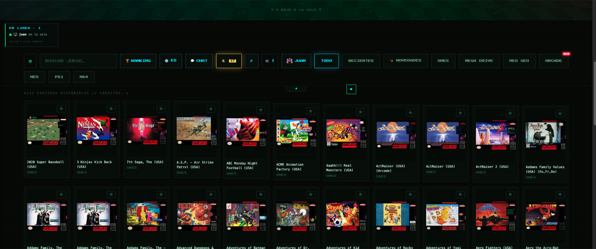
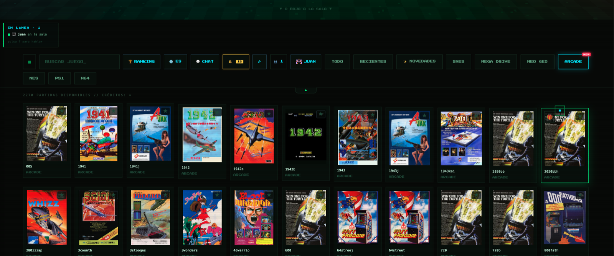
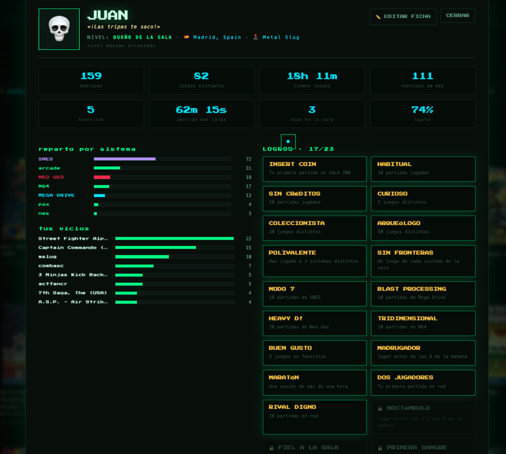
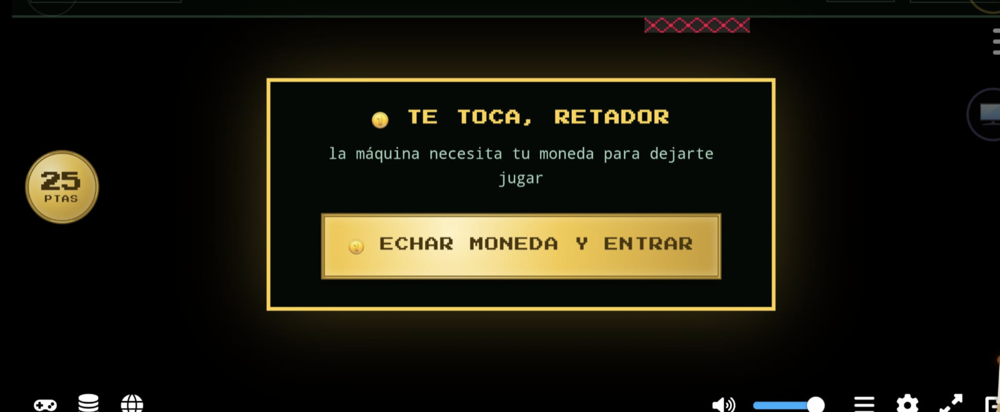

A retro arcade you host yourself: SNES, Mega Drive, Neo Geo, arcade,
N64 and NES in the browser — with real 2-player online netplay that connects
players directly to each other, not through your server.
The 3D lobby: every neon door is a
system, and members walk around it in real time.
Why it is different
Netplay that worksEmulatorJS ships an unfinished
synchroniser; this replaces it with a deterministic lockstep and a
WebRTC channel between players, so latency does not depend on where
your server lives.
It scalesMatches never touch the host machine, so a
Raspberry Pi can serve a whole club. Add members, not hardware.
A club, not a launcherInvites, member cards, levels,
medals, duels, a ranking podium, chat with mentions and a spectator mode.
Arcade that heals itselfTries several libretro cores
per ROM until one boots, then remembers it for everybody.




What you need
A Raspberry Pi 4 (or any small Linux box) with nginx, Node.js and Python
Your own game files — this project ships none
Optional: Tailscale Funnel to reach it from outside, no open ports
Features
P2P netplay (WebRTC lockstep) with adaptive delay, input batching,
desync detection, polite pause when your rival steps away and auto-rejoin
Spectator mode: a third member watches the live match
Couch mode: navigate the whole site with a gamepad
Profiles with unlockable avatars, war cries, levels, medals and cross-confirmed duels
Invitation-based registration (5 per member), chat with @mentions and a news feed
Mobile-first UI: side drawer, compact bar, touch pads per system
⚠️ SALA 200 contains no games, ROMs or BIOS files, and does not
link to any. Use dumps of cartridges you own. The emulation cores come from
EmulatorJS (GPL-3.0).
En español
SALA 200 es un salón recreativo clandestino autoalojado: montas el
servidor en tu Raspberry Pi, tus colegas entran por invitación y jugáis a
dobles por internet con conexión directa entre jugadores. Lleva moneda de
25 pesetas para el INSERT COIN, frases de pique con voz, ranking con podio,
medallas, palco para espectadores y navegación completa con mando.
El código, el montaje paso a paso y los detalles del netplay están en
el repositorio.